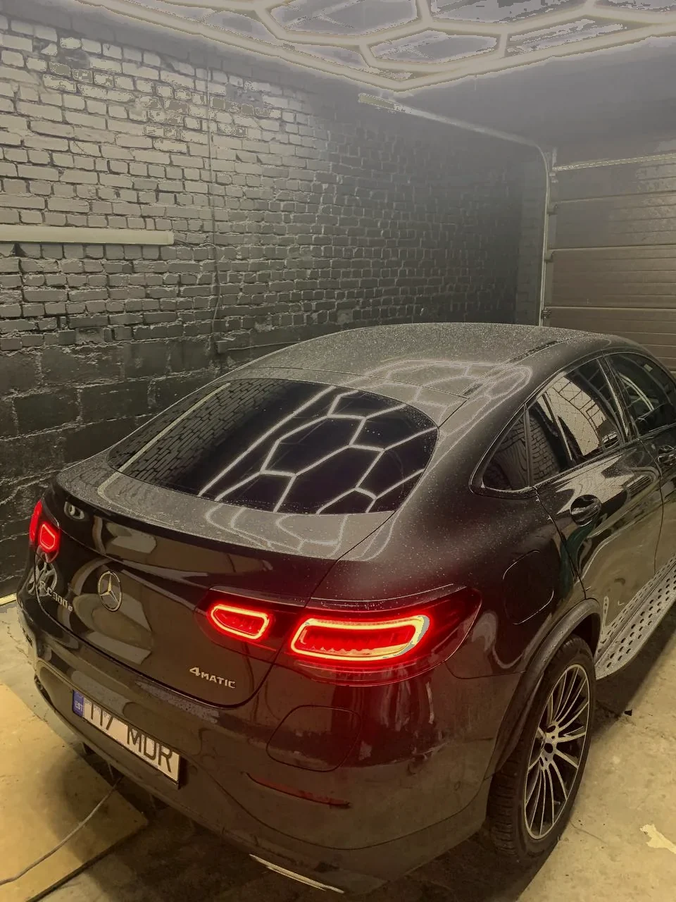
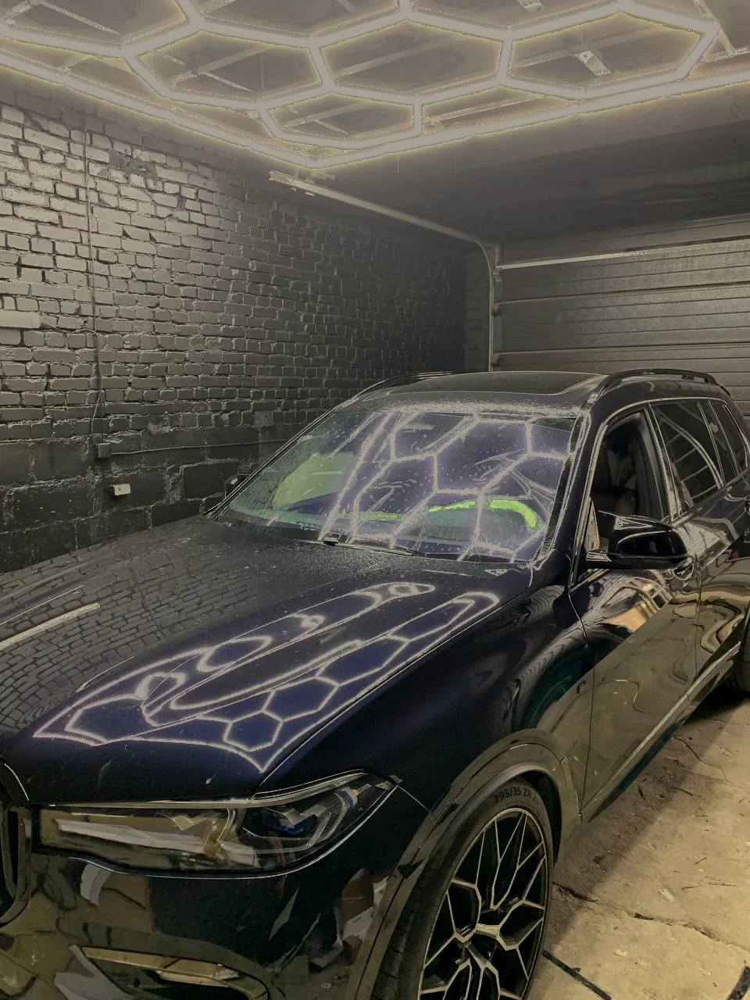
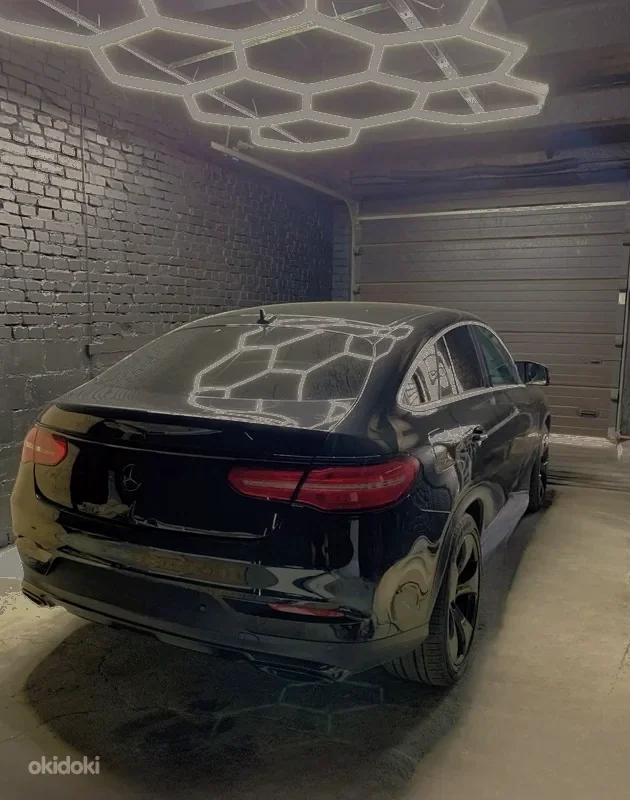
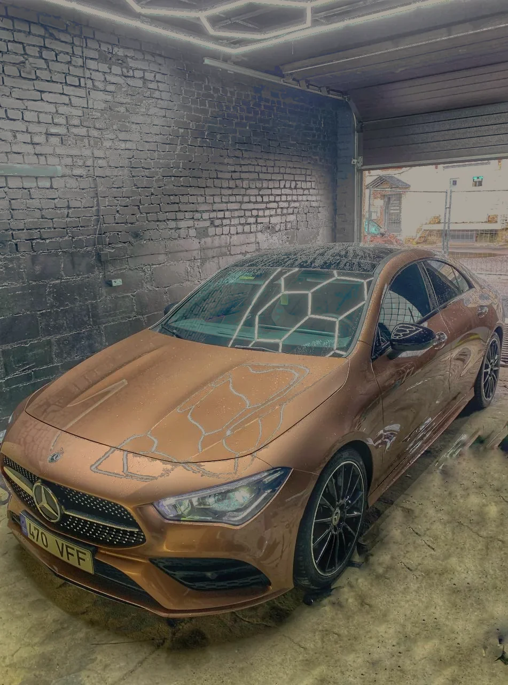
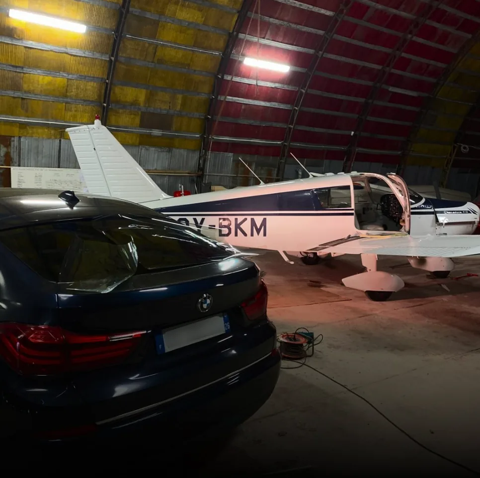

Примеры выполненных работ по тонировке стекол. Автомобильная и архитектурная тонировка стекол в работах Protoon.








Отправьте размеры стекла или модель автомобиля, краткое описание задачи. Мы уточним детали и дадим предварительную стоимость.